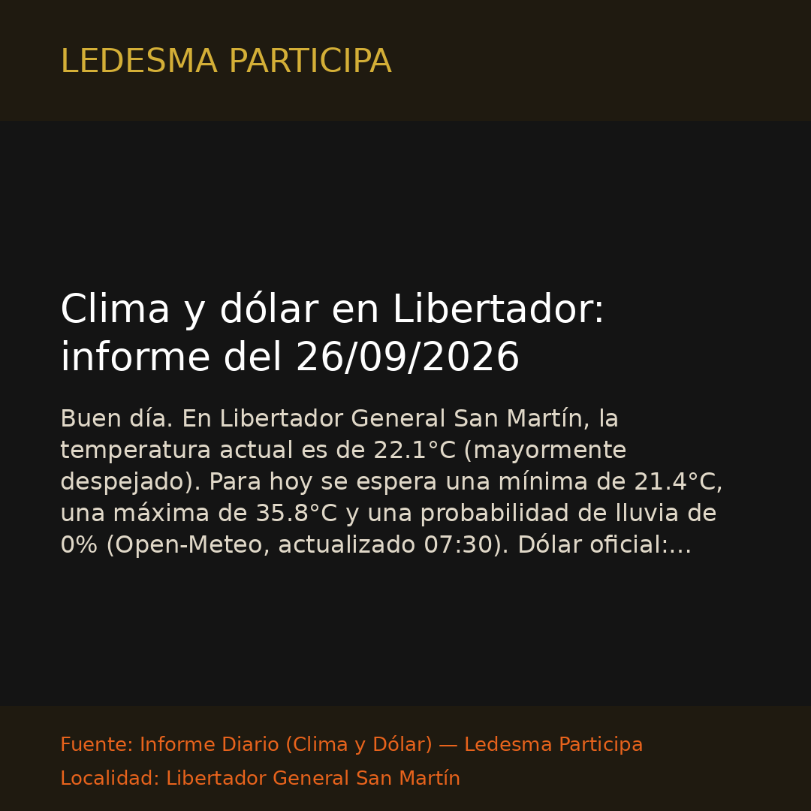

Libertador Gral. San MartínClima y dólar en Libertador: informe del 26/09/2026
Buen día. En Libertador General San Martín, la temperatura actual es de 22.1°C (mayormente despejado). Para hoy se espera una mínima de 21.4°C, una máxima de 35.8°C y una probabilidad de lluvia de 0%…